wget https://repo.anaconda.com/miniconda/Miniconda3-latest-Linux-x86_64.shWalkthrough of Installing Everything Needed for AI-Assisted-Coding-In-Python Workshop
If you are having any issues with installing anything for the workshop, think about submitting a consulting request where D-Lab consultants can help you get prepared for your workshop.
1 Checklist of Everything Needed to Install for AI-Assisted-Coding-In-Python
- [] Install GitHub
- [] Sign up for GitHub Copilot
- [] Install Python
- [] Install Visual Studio (VS) Code
- [] Adjust VSCode to work with Python
- [] Download Zip file
When these are completed, you are ready for your AI-Assisted-Coding-In-Python workshop.
2 Installing GitHub
Go to GitHub and sign up for a GitHub account.
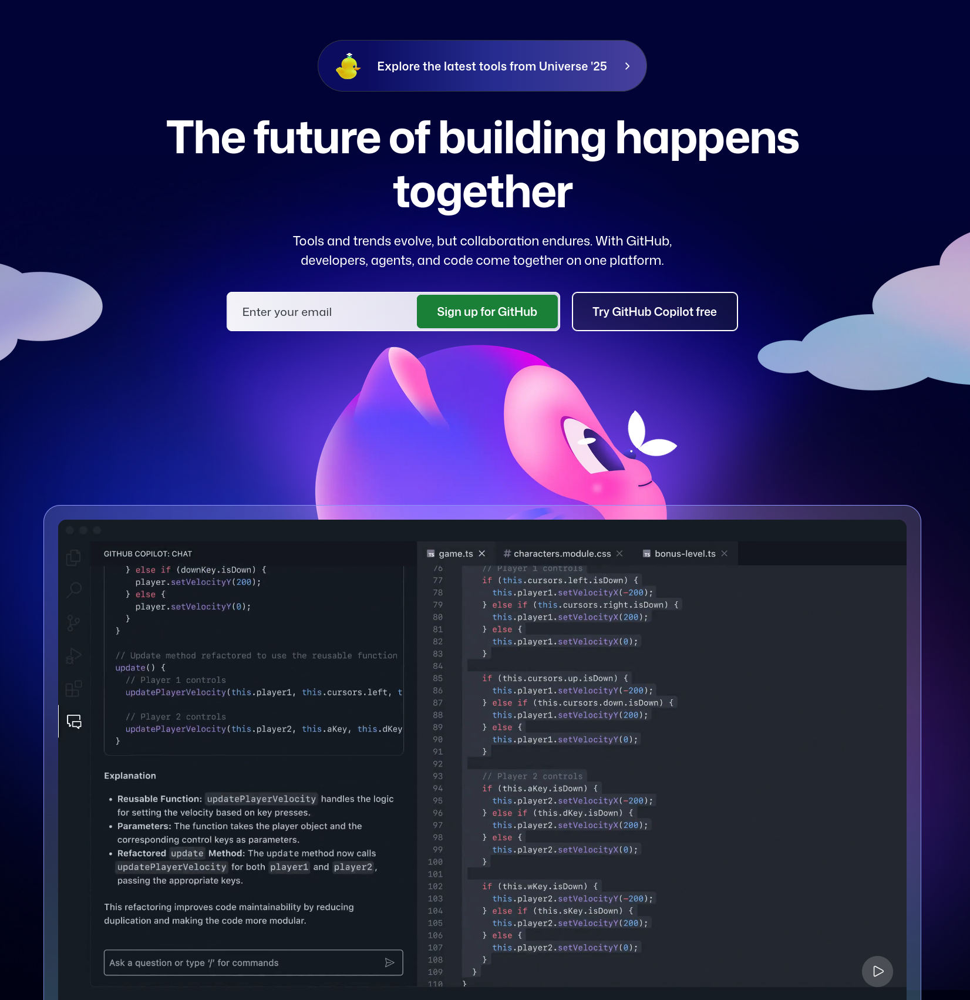
At this page, you will sign up for GitHub with your @berkeley.edu email account. Follow the directions to verify your account. Below are some recommendations for creating a username (inspired by https://happygitwithr.com/github-acct).
- Use part of your real name so it is easier for people to know who you are
- Try and keep it short, you may have to type it a lot
- Keep everything lowercase. If you really want to separate words, use a hyphen (-) or an underscore (_)
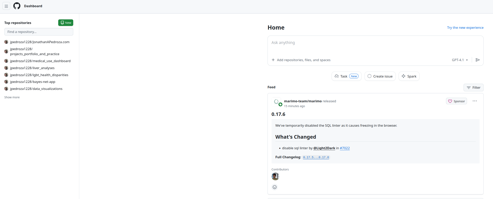
Once you sign in, you will be at your dashboard. You have now downloaded GitHub! Congrats!
2.1 Optional: Two-Factor Authentication (2FA)
While not part of the tutorial, GitHub can house public and private data. If you are planning on continuing to use GitHub, please think about creating additional safeguards by setting up your Two-Factor Authentication (2FA). Below are some resources and a quick look into 2FA.
For more information on 2FA, you can find resources here (About 2FA) or here (Securing account with 2FA).
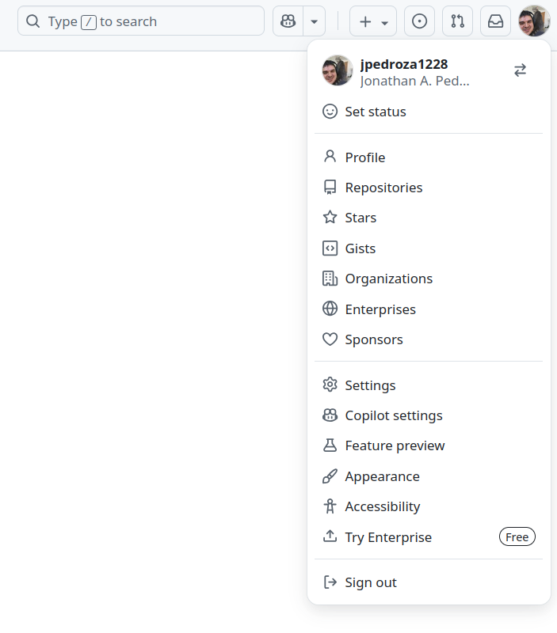
From your dashboard, you will want to to to your profile. If you just created your account, you will not have a profile picture. You’ll then click on your profile circle to show a dropdown menu.

At this dropdown menu, you will go to your Settings.
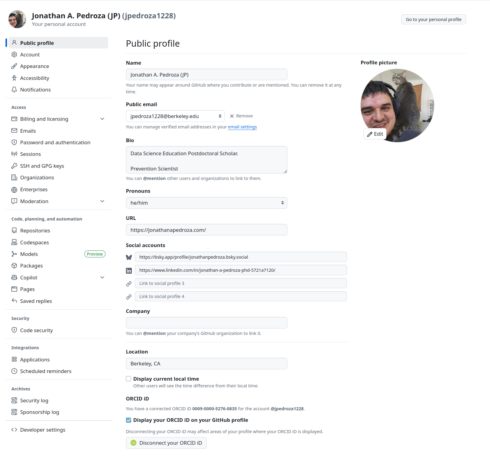
At your settings, there will be a lot of information.
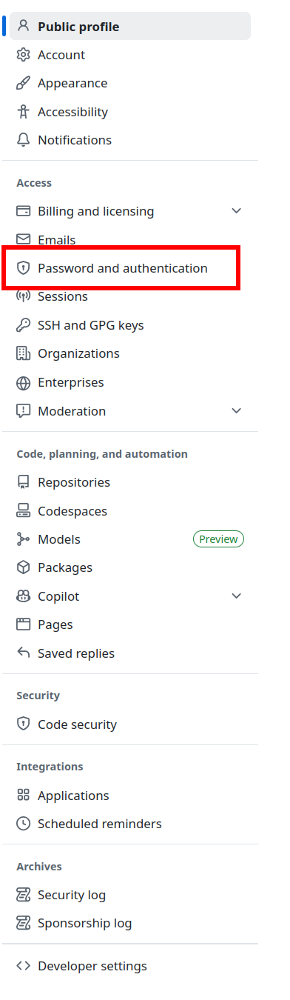
On the left sidebar, you will want to go to Password and authentication. Here you can customize how you would like to sign into GitHub.
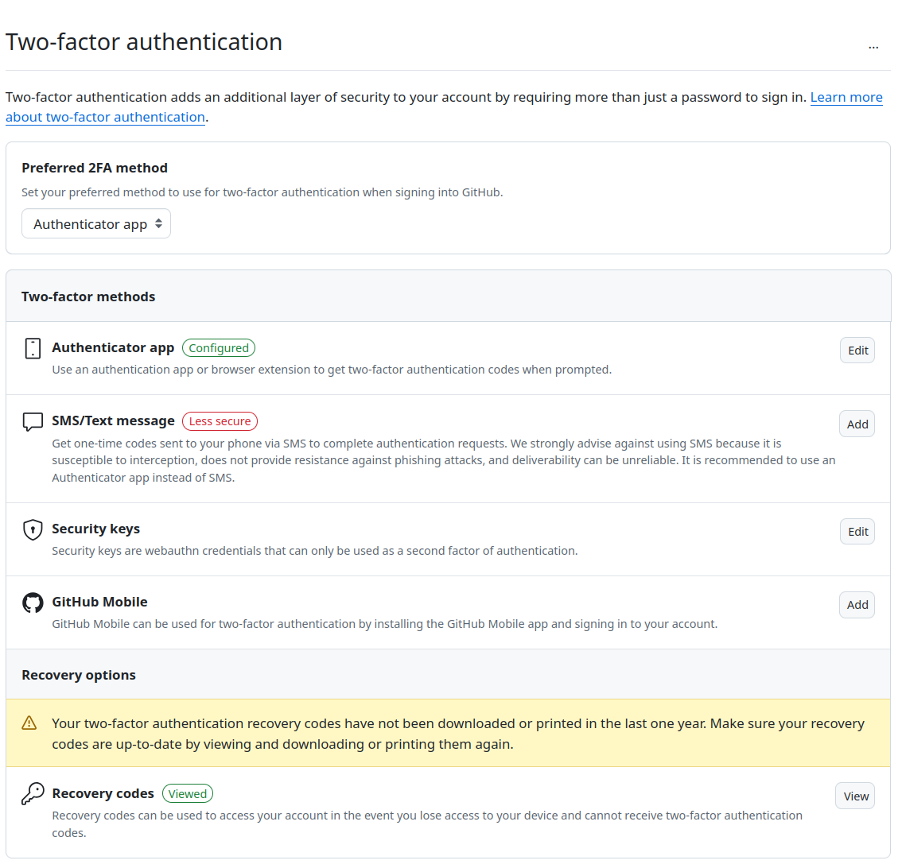
While there are options for 2FA, I would recommend using an authenticator app. So every time you sign in (among other actions on GitHub), you will sign in with your username and password then verify it with a code from your authenticator app.
- [] Sign up for GitHub Copilot
- [] Install Python
- [] Install Visual Studio (VS) Code
- [] Adjust VSCode to work with Python
- [] Download Zip file
3 Sign Up for GitHub Copilot
Signing up for GitHub Copilot will depend on whether you plan to sign up for the free version, CoPilot Pro using verified information, or pay for a Pro plan (see pricing information here).
3.1 Free Version
The free version of GitHub Copilot comes with VSCode. You can install the necessary extensions in the following section. You can also try out a 30-day trial here.
3.2 Copilot Pro (Instructions for Verification)
To get Copilot Pro for teachers and students (for free), you will need to follow the following steps. Below are some steps from the optional 2FA section above.
From your dashboard, you will want to to to your profile. If you just created your account, you will not have a profile picture. You’ll then click on your profile circle to show a dropdown menu.
At this dropdown menu, you will go to your Settings.
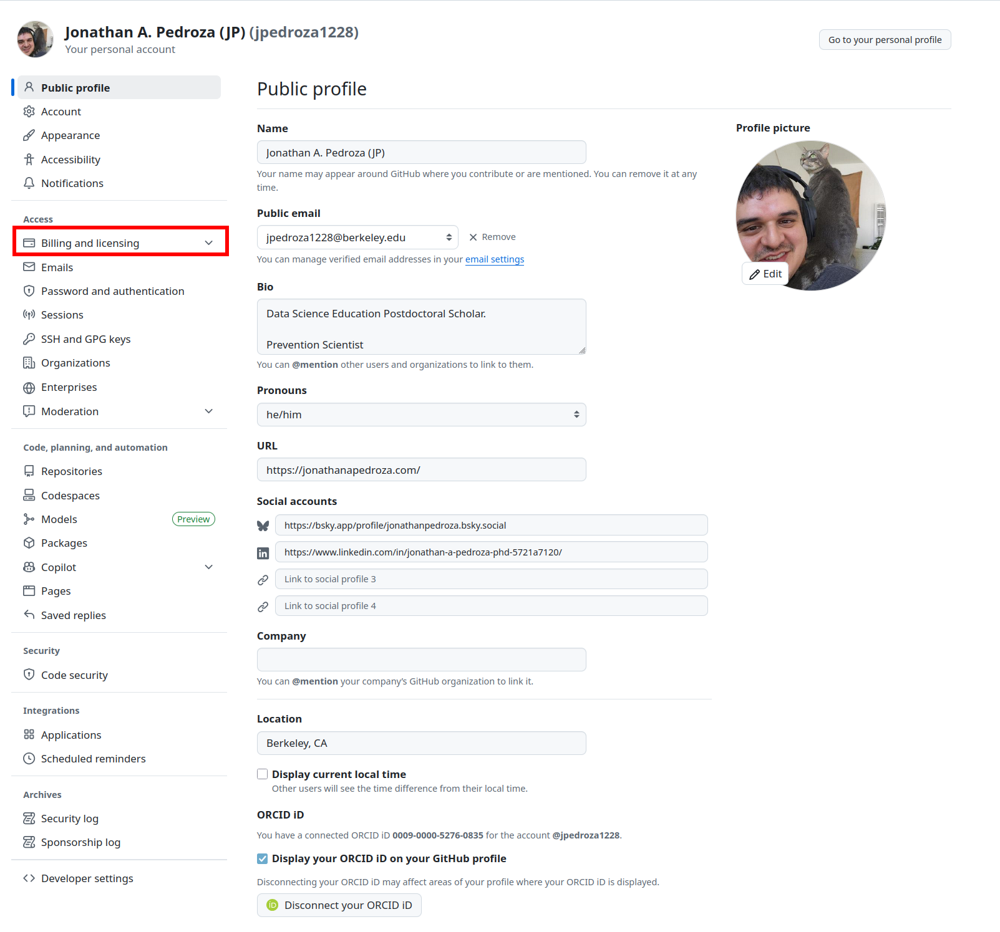
At your settings, there will be a lot of information. This time, you will click on the dropdown menu for Billing and licensing.
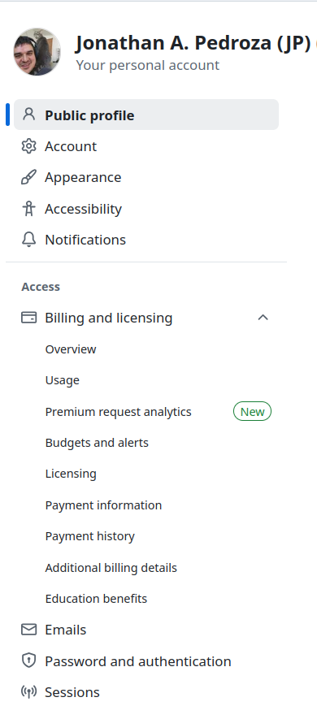
From the dropdown menu, you will click on Education benefits.
Clicking on Education benefits will take you to GitHub Education. There you will start your application to get additional benefits, including GitHub Copilot Pro.
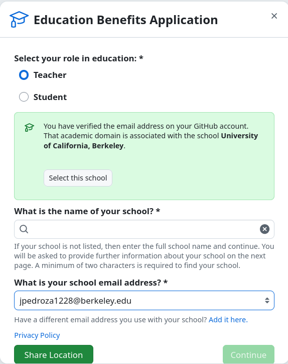
Once you start your application, you will have the option of choosing your role At UC Berkeley. Below are general instructions for teachers and students; however, the instructions below will start to shift toward specific instructions for teachers.
On the application, you can include the full name of the university (University of California, Berkeley) and when given an option to Select a school, click Select this school. You will also include your school email address in the dropdown menu. Make sure you are including your @berkeley.edu email address since verification relies on that email address.
You will also be asked to share your location, which will then allow you to click on Continue and finish this section of the application. You will then be asked for additional information in the form of proof of you being associated with UC Berkeley. The following information will be for teacher roles.
You will need to provide proof of your affiliation. This proof must have your name, a current date, and the name of your institution on it. If your application is rejected, it is most likely because your proof of affiliation was missing one of these three things (but, you can always apply again with new proof!). For example, some UC Berkeley student IDs do not have a date on them, so they will not be accepted. You may also have to follow some additional steps to verify your GitHub account, make sure to check your email for instructions. Note We have also heard of a bug that results in .png files not being accepted while .jpeg files are.
If you are a UC Berkeley student, the most straightforward way to get proof is to download a certificate of enrollment verification by going to CalCentral –> My Academics –> Enrollment Verification (under Academic Records) –> View or Print Enrollment via Self Service –> Obtain an enrollment certificate. This will give you a PDF enrollment certificate which you can screenshot and submit for proof of affiliation (you need to use a screenshot because the application does not accept PDFs).
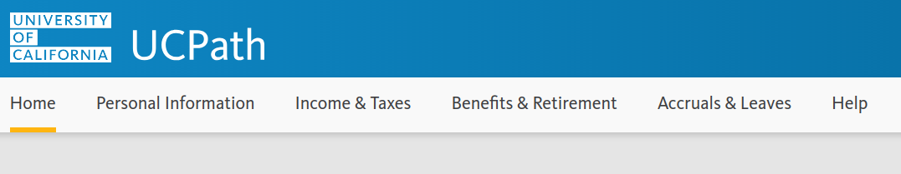
For teacher roles, you will need to go to UCPath.
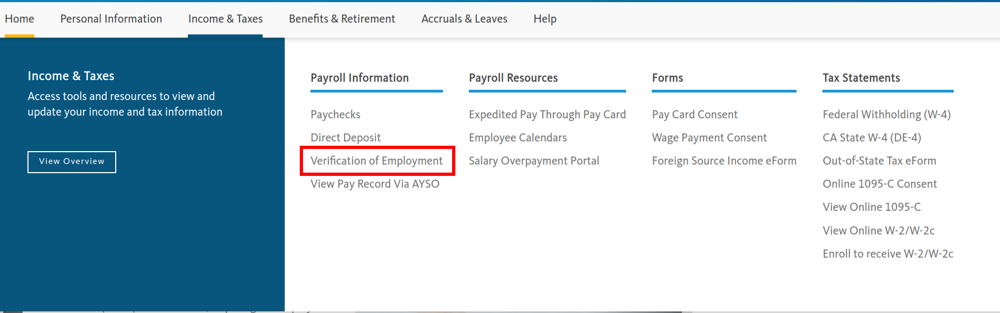
From the main page, you will want to click on Income & Taxes and go to Verification of Employment under Payroll Information.
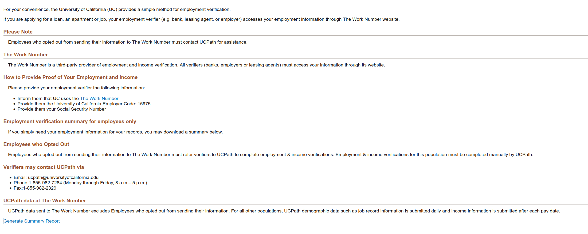
To get verification of your employment, you will then go to the bottom of the page and click on Generate Summary Report. You will be showed a pdf with your title, the current date of when you generated report (today’s date), and other information. Since you cannot submit PDFs, make sure you get a screenshot of the report and save it as a .jpg file.
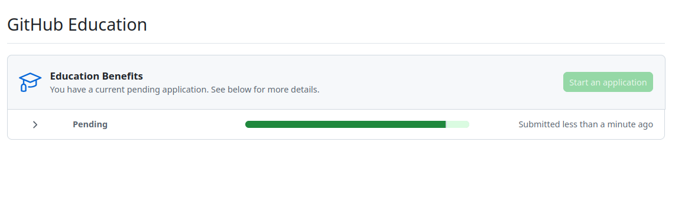
Once you have submitted your proof, your application will show that it is Pending.
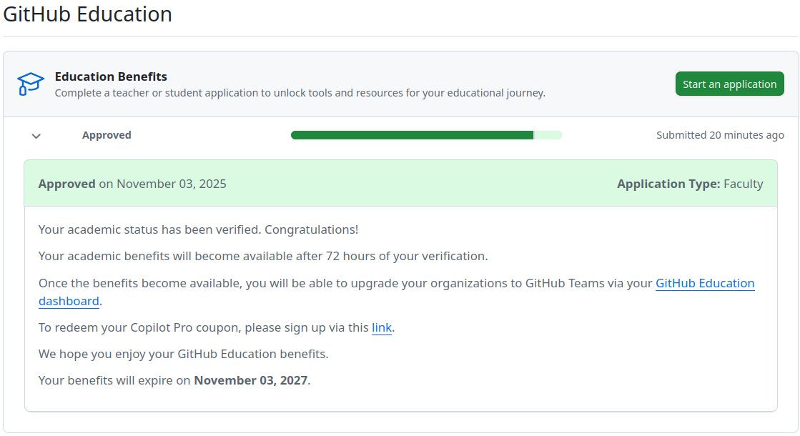
After some time, it will state that you are approved. This is not a full approval, and full approval will take some time to gain access to Copilot Pro.
3.3 Section on Getting Copilot Set Up (NEEDS WORK –> WAITING ON ACCESS)
NEED TEXT HERE
- [] Install Python
- [] Install Visual Studio (VS) Code
- [] Adjust VSCode to work with Python
- [] Download Zip file
4 Installing Python
For the purposes of this workshop, we will use anaconda to download Python. Follow the directions to sign up and verify your email address.
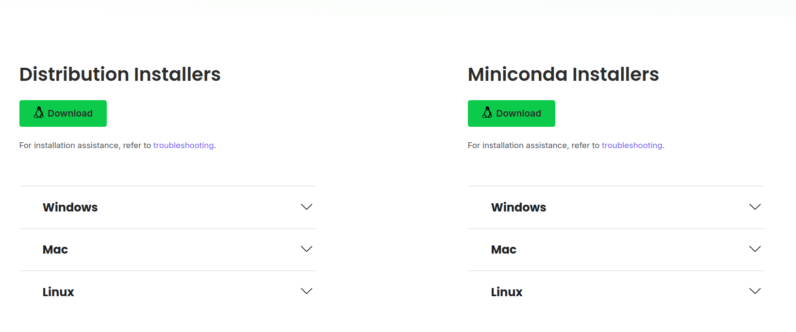
When you get to the option of installing Distribution Installers or Miniconda Installers, the Distribution Installers will install Anaconda, which will provide additional tools, including a different program similar to VSCode. You may only want to install miniconda, which will include conda (the environment and Python interpreter) and Python itself.
4.1 Linux Installation
For Linux users, miniconda installation looks a little different.There is a tutorial on how to install miniconda here.
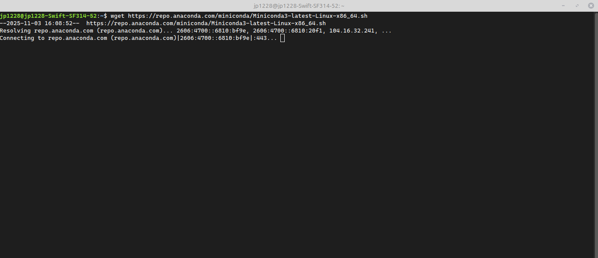
Following those instructions, answering the prompts in the terminal, and running the code in the instructions (the same code is below.) You will want to run each line separately since there are prompts that you need to answer.
bash ~/Miniconda3-latest-Linux-x86_64.shsource ~/.bashrc- [] Install Visual Studio (VS) Code
- [] Adjust VSCode to work with Python
- [] Download Zip file
5 Install VSCode
Let’s move forward with installing VSCode. You can install VSCode here for your operating system. Below are detailed instructions on how to install VSCode.
5.0.1 Mac
Follow the directions to install VSCode. Below, I will include some helpful tips for VSCode extensions that may help when using Python.
5.0.2 Windows
Follow the directions to install VSCode. Below, I will include some helpful tips for VSCode extensions that may help when using Python. For Windows users, it is recommended to check “Save version number in registry” during installation so that the R extension can find your R installation automatically. If you have not done this you may need to add the location of your R to your PATH manually (see FAQ 3.1 I am using windows and my VS Code can’t find R!).
5.0.3 Linux
Note: Everything below shows installation using Linux Mint.
System:
Host: jp1228-Swift-SF314-52 Kernel: 6.8.0-87-generic arch: x86_64 bits: 64
Desktop: Cinnamon v: 6.4.8 Distro: Linux Mint 22.1 XiaOption 1: Use the Link
- Click on the link above and open the download file.
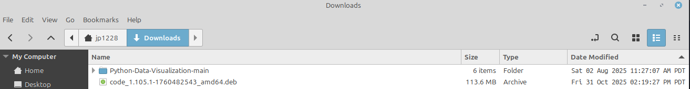
- Click Install Package to start the install.
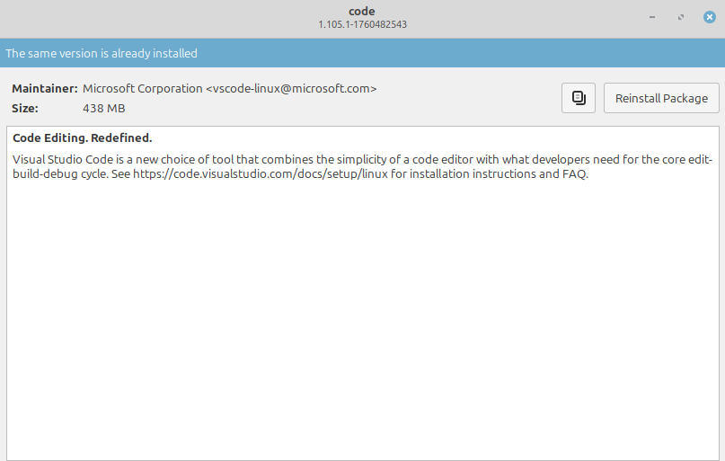
Option 2: Download Using Terminal
- Update your programs.
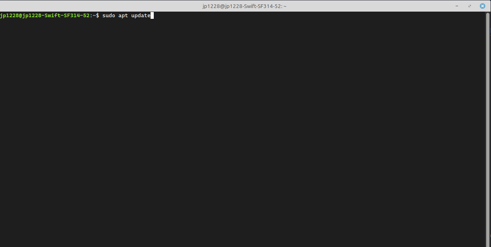
- Then you will install the file that you downloaded from this page as shown below. Your file will look different, depending on the version and differences in your linux distribution, but it should start downloading after running the code below.
sudo apt install ./<file_name>.deb
# include the name of your file and change <file_name> to the name of your file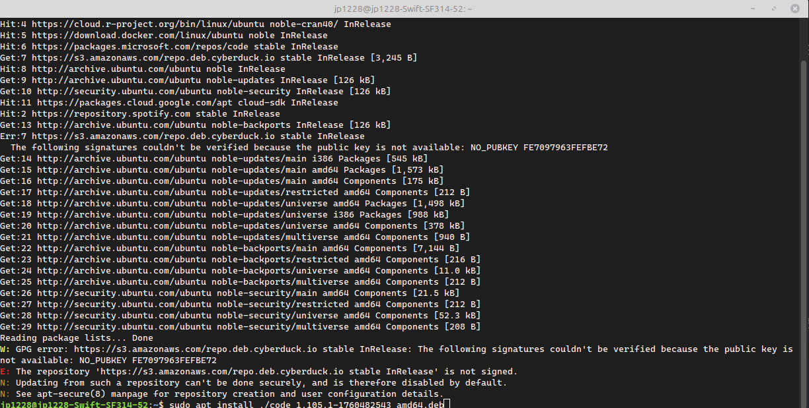
5.1 VSCode Documentation
When you installed VSCode, it should have brought you to the documentation page. If not, you can find all the documentation here. This tutorial also provides an in-depth tutorial on getting started with VSCode.
- [] Adjust VSCode to work with Python
- [] Download Zip file
6 Setting up Python in VSCode
Note Your VSCode will look slightly different, as the screenshots are from a custom VSCode theme. Additionally, the ordering and number of tabs on the sidebar may be different from the VSCode default.
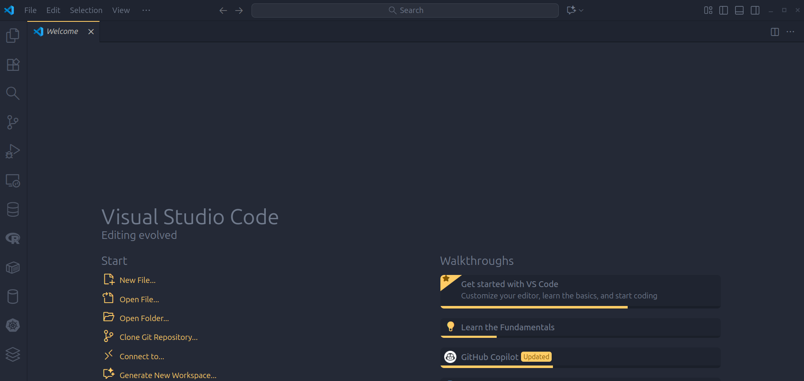
Once you open VScode, you will be on the Welcome page.
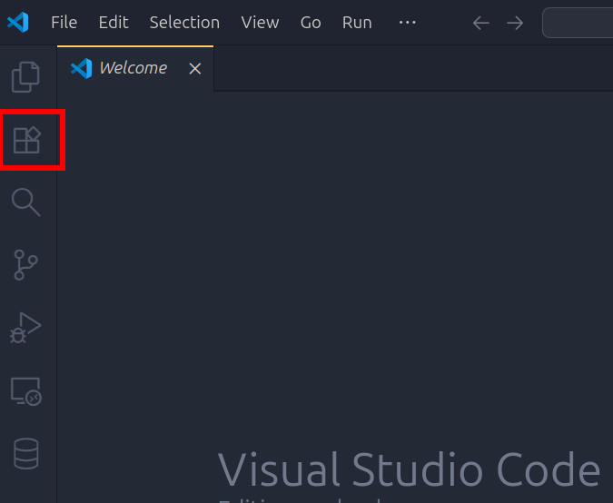
From there, the first place you will want to go is to the left sidebar. There you will see several tabs. You will click on the Extensions tab shown above.
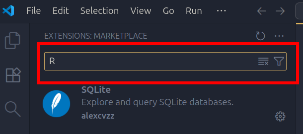
The easiest way of finding all the extensions you will need is to use the search bar at the top. *You can also use this to find a theme for your VScode. See several examples of themes here that you can then search for by name.
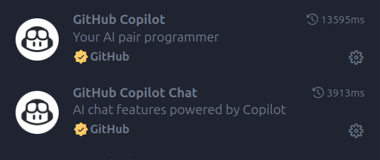
Right now would be a great time to search and install GitHub Copilot. There are two extensions that should be installed, GitHub Copilot and the GitHub Copilot Chat extension. GitHub Copilot Chat should be installed once you install GitHub Copilot.
6.1 Choosing an intepreter
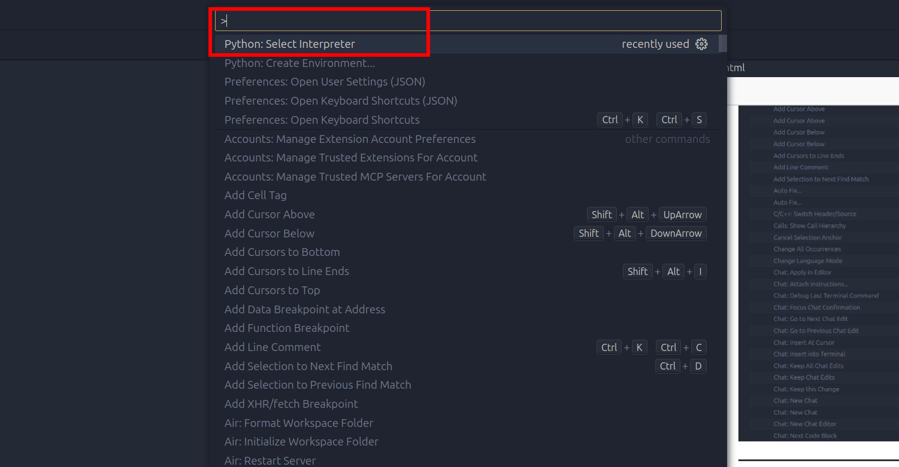
Go to the command palette (Windows/Linxu: Ctrl + Shift + P; Mac: Cmd + Shift + P) and search for Python: Select Interpreter.
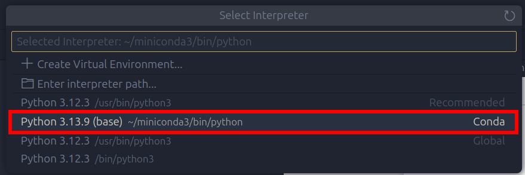
Choose your conda environment. It should state Conda on the right side.
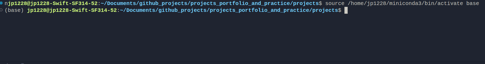
Now when you open a bash terminal, you will see that it starts with:
source <miniconda-path-location>/bin/activate baseThat means you are now using conda as your Python interpreter. This should translate to using the Jupyter notebook for the workshop materials.
More information can be found on environments here, as well as general start up assistance with Python in VSCode.
- [] Download Zip file
7 Download Zip File
To get all the materials for the AI-Assisted-Coding-In-Python workshop, you will want to download the Zip file here.
Note You may want to wait until the day of your workshop to make sure you download the most recent version of the contents.
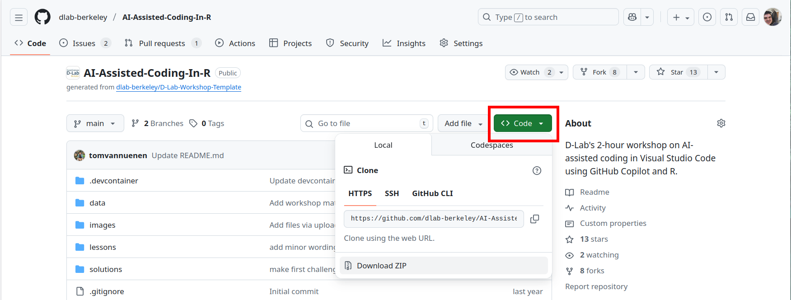
Once you are at the D-Lab GitHub repository for the AI-Assisted-Coding-In-Python workshop, you will go to the green button that says <Code> with a dropdown menu. Clicking on the button will give you options for how to put the repository’s contents on your local computer.
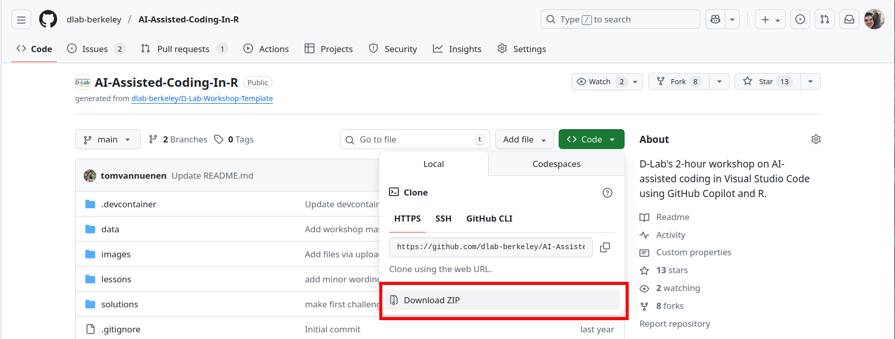
For now, you can Click on the Download ZIP to download a ZIP file. The ZIP file should then be in your Downloads folder. There you can extract the contents of the ZIP file.
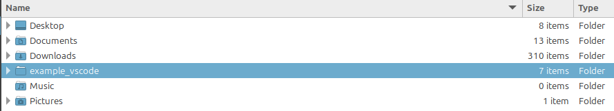
Once you have extracted the contents of your ZIP file. I put all of the contents in a new folder. You can put this folder wherever it makes sense to you. I have my folder (which I named example_vscode) under my username folder. You can create the folder on your Desktop for easy access or within your Documents folder if you would like.
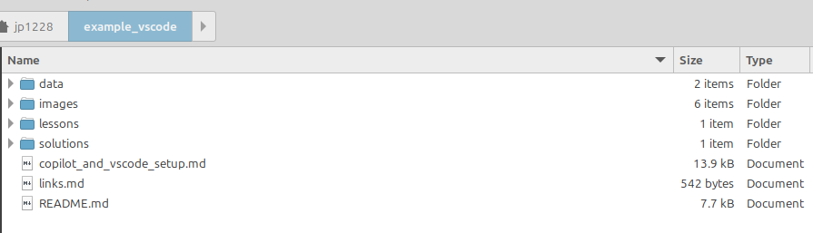
Within the folder, I copied and pasted everything from the ZIP file into this folder. The files should look similar to the screenshot above.
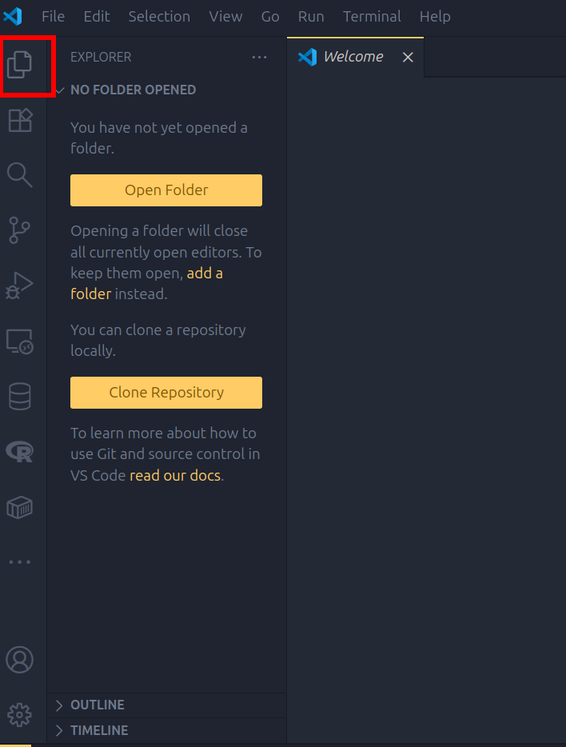
Now you can open VSCode and click on the folder tab on the left sidebar. There you can click on the option Open Folder to open the folder with the workshop contents.
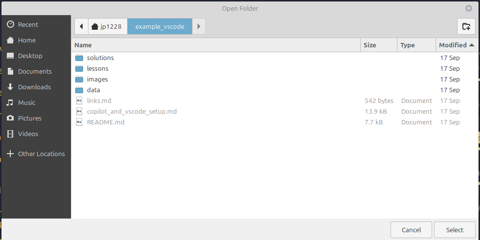
In my case, I will look for my example_vscode folder and click select at the bottom to start VSCode from this folder.
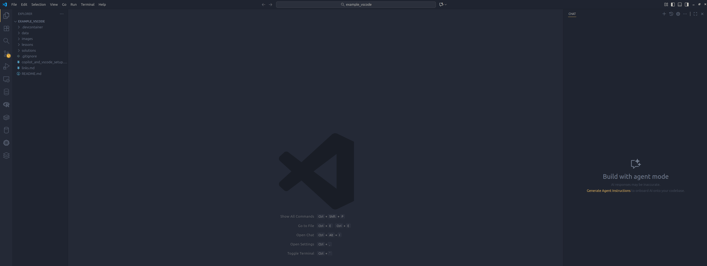
Once you select your folder, your VSCode will populate with your workshop files on the left and a tab on the right for your prompts with GitHub Copilot.
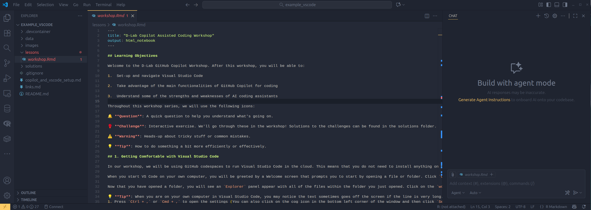
Finally, you can click on the lessons folder on the left and click on your notebook.
Congrats! You are now ready for your AI-Assisted-Coding-In-Python workshop.